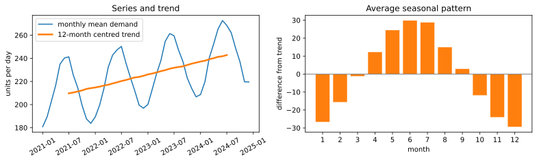
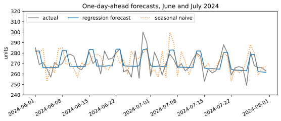

Chapter 12: Text and Time Series Basics¶
Turning words into features, and working with data ordered in time
Learning outcomes
After this chapter you should be able to:
- clean and tokenise text, and count words with Python and pandas;
- represent documents as a bag of words with
CountVectorizer, and explain stop words and n-grams; - explain and compute TF-IDF weights, and use
TfidfVectorizer; - build and evaluate a simple text classifier, and find similar documents with cosine similarity;
- work with dates in pandas: a datetime index, resampling, rolling windows, lags and differences;
- separate a series into trend and seasonal patterns in a simple way;
- forecast with naive baselines and lag features, and evaluate forecasts without looking into the future.
Two kinds of data need special handling before the methods of the previous chapters apply. Text does not arrive as numbers at all; it has to be turned into features. Time series, measurements taken in order over time, are numbers, but their order matters: today's value depends on yesterday's, patterns repeat with the seasons, and any evaluation must respect the fact that the future is unknown. This chapter introduces both, at the level needed to do sound basic work. Each is a large field of its own.
import re
from collections import Counter
import numpy as np
import pandas as pd
import matplotlib.pyplot as plt
12.1 Text as data¶
A piece of text is called a document (a review, an email, a tweet, a page), and a set of documents is a corpus. The first steps turn each document into a list of tokens, usually words:
- Normalise: convert to lower case, so that "Good" and "good" count as the same word.
- Tokenise: split into words, dropping punctuation. A regular expression such as
[a-z]+("one or more letters") does this simply for English. - Optionally remove stop words, very common words such as "the", "is" and "and" that carry little meaning on their own.
review = "The tea was GOOD, the samosas were cold... but the service was good!"
tokens = re.findall(r"[a-z]+", review.lower())
print(tokens)
print(Counter(tokens).most_common(3))
stop = {"the", "was", "were", "but", "a", "and", "is"}
print([t for t in tokens if t not in stop])
['the', 'tea', 'was', 'good', 'the', 'samosas', 'were', 'cold', 'but', 'the', 'service', 'was', 'good']
[('the', 3), ('was', 2), ('good', 2)]
['tea', 'good', 'samosas', 'cold', 'service', 'good']
re.findall returns every match of the pattern. The token "samosas" survived intact; a pattern of letters only would split "don't" into "don" and "t", which is one reason real projects use more careful tokenisers. Removing stop words leaves the words that carry the content, though note that it also removes words like "not", which can reverse a meaning ("not good"), so stop-word lists should be chosen with care.
pandas applies the same operations to a whole column with the .str methods:
comments = pd.Series([
"Fast delivery, great packaging",
"Delivery was late and the box was damaged",
"Great taste, will order again",
"Late again. Disappointed.",
])
words = comments.str.lower().str.findall(r"[a-z]+")
print(words.str.len().tolist()) # words per comment
print(words.explode().value_counts().head(5)) # most common words in the corpus
[4, 8, 5, 3]
delivery 2
great 2
was 2
late 2
again 2
Name: count, dtype: int64
explode turns a column of lists into one row per element, so that value_counts can count words across all the documents.
12.2 Bag of words¶
A model needs a fixed set of numerical features for every document. The simplest representation is the bag of words: build a vocabulary of all the words in the corpus, and represent each document by how many times it contains each vocabulary word. Word order is thrown away (hence "bag"). The result is a document-term matrix, with one row per document and one column per word.
from sklearn.feature_extraction.text import CountVectorizer
docs = ["the tea is hot", "the coffee is cold", "hot tea and hot coffee"]
cv = CountVectorizer()
dtm = cv.fit_transform(docs)
print(cv.get_feature_names_out())
print(dtm.toarray())
['and' 'coffee' 'cold' 'hot' 'is' 'tea' 'the']
[[0 0 0 1 1 1 1]
[0 1 1 0 1 0 1]
[1 1 0 2 0 1 0]]
The vocabulary is sorted alphabetically, and each row counts the words of one document: the third document contains "hot" twice. fit_transform learns the vocabulary and builds the matrix; a vectorizer fitted on training documents is applied to new documents with transform, which ignores words not in the vocabulary.
Real vocabularies have tens of thousands of words, and each document uses only a few, so most entries are zero. scikit-learn stores the matrix in a sparse format that records only the non-zero entries; toarray() converts it to an ordinary array, which is fine for small examples only.
Two options of CountVectorizer are used constantly. stop_words="english" removes a built-in list of English stop words. ngram_range=(1, 2) adds bigrams, pairs of adjacent words, so that phrases such as "not good" or "very late" become features of their own and some word order is recovered.
cv2 = CountVectorizer(ngram_range=(1, 2))
cv2.fit(["not good at all", "very good"])
print(cv2.get_feature_names_out())
['all' 'at' 'at all' 'good' 'good at' 'not' 'not good' 'very' 'very good']
12.3 TF-IDF¶
Raw counts give too much weight to words that appear everywhere. A word that occurs in every document cannot help tell documents apart. TF-IDF (term frequency–inverse document frequency) reweights each count by how rare the word is across the corpus. With \(n\) documents, of which \(\text{df}(t)\) contain the term \(t\), scikit-learn's default inverse document frequency is
and the weight of term \(t\) in document \(d\) is its count in \(d\) times \(\text{idf}(t)\). Each document's vector is then scaled to length 1. A word in every document gets the smallest idf, 1; a word in a single document gets the largest.
from sklearn.feature_extraction.text import TfidfVectorizer
tv = TfidfVectorizer()
tfidf = tv.fit_transform(docs)
print(pd.Series(tv.idf_, index=tv.get_feature_names_out()).round(3))
print(pd.DataFrame(tfidf.toarray(), columns=tv.get_feature_names_out()).round(2))
and 1.693
coffee 1.288
cold 1.693
hot 1.288
is 1.288
tea 1.288
the 1.288
dtype: float64
and coffee cold hot is tea the
0 0.00 0.00 0.0 0.50 0.50 0.50 0.50
1 0.00 0.46 0.6 0.00 0.46 0.00 0.46
2 0.47 0.36 0.0 0.72 0.00 0.36 0.00
"and" and "cold", each in one document, have the highest idf; "coffee", "hot", "is", "tea" and "the" appear in two of the three documents and get a lower one. Within each row, the rarer words carry more weight. For example, \(\text{idf}(\text{cold}) = \ln(4/2) + 1 = 1.693\).
12.4 A small text classifier¶
Here is a tiny corpus of short product reviews, each labelled positive (1) or negative (0). Real sentiment datasets have thousands of reviews; this one is small so that it can be printed, which also means the results are fragile.
reviews = [
("Arrived quickly and tastes wonderful", 1), ("Lovely aroma, I will buy again", 1),
("Excellent quality for the price", 1), ("Great flavour and fresh packaging", 1),
("Very good tea, strong and fresh", 1), ("My family loved it, great value", 1),
("Wonderful taste, fast delivery", 1), ("Fresh, fragrant and well packed", 1),
("Good quality, arrived on time", 1), ("Perfect for my morning cup, excellent", 1),
("Delicious and fresh, highly recommended", 1), ("Fast shipping and lovely taste", 1),
("Stale and tasteless, very disappointed", 0), ("Arrived late and the packet was torn", 0),
("Terrible flavour, would not buy again", 0), ("Poor quality, not worth the price", 0),
("The box was damaged and the tea was stale", 0), ("Bitter taste, waste of money", 0),
("Delivery took two weeks, very poor", 0), ("Not fresh at all, smells old", 0),
("Awful, the worst tea I have bought", 0), ("Packaging broken and late delivery", 0),
("Weak and tasteless, disappointed", 0), ("Never again, poor value and stale", 0),
]
rev = pd.DataFrame(reviews, columns=["text", "label"])
print(rev["label"].value_counts().to_dict())
{1: 12, 0: 12}
A pipeline joins the vectorizer and a classifier, so that the vocabulary is learned from the training folds only (the leakage rule of Section 10.4 applies to text too). Multinomial naive Bayes is a fast, classic choice for word counts; logistic regression on TF-IDF features is another strong baseline.
from sklearn.pipeline import make_pipeline
from sklearn.naive_bayes import MultinomialNB
from sklearn.linear_model import LogisticRegression
from sklearn.model_selection import cross_val_score, StratifiedKFold
cv_folds = StratifiedKFold(n_splits=4, shuffle=True, random_state=0)
for name, clf in [("naive Bayes + counts", make_pipeline(CountVectorizer(), MultinomialNB())),
("logistic + TF-IDF", make_pipeline(TfidfVectorizer(), LogisticRegression()))]:
s = cross_val_score(clf, rev["text"], rev["label"], cv=cv_folds)
print(f"{name}: accuracy {s.mean():.2f} (folds: {s.round(2)})")
naive Bayes + counts: accuracy 0.71 (folds: [0.5 0.67 0.83 0.83])
logistic + TF-IDF: accuracy 0.71 (folds: [0.5 0.67 0.83 0.83])
Fitted on all 24 reviews, the logistic model's coefficients show which words push a review towards positive or negative:
model = make_pipeline(TfidfVectorizer(), LogisticRegression()).fit(rev["text"], rev["label"])
vocab = model[0].get_feature_names_out()
coef = pd.Series(model[-1].coef_[0], index=vocab).sort_values()
print("most negative:", coef.head(6).index.tolist())
print("most positive:", coef.tail(6).index.tolist())
print(model.predict(["fresh and wonderful", "stale and late", "not good"]))
most negative: ['not', 'poor', 'stale', 'the', 'disappointed', 'tasteless']
most positive: ['great', 'good', 'lovely', 'fast', 'wonderful', 'fresh']
[1 0 0]
The word lists make sense, and the first two predictions are right. The third is wrong: "not good" is classified as positive (1). The model has learned that "not" signals a negative review, but it simply adds up the weights of the words present, and the weight of "good" wins; it cannot see that "not" reverses the word after it. Bigrams, which make "not good" a feature of its own, and above all far more data are the usual remedies.
Caution: tiny text datasets
With a few dozen documents, cross-validated accuracy swings widely from fold to fold, and the model learns accidents of wording (a word that happened to occur only in negative reviews). Use small corpora to learn the tools, and judge real text models only on large, representative data.
Finding similar documents¶
TF-IDF vectors also measure how similar two documents are. The cosine similarity of two vectors is the cosine of the angle between them: 1 for vectors pointing the same way, 0 for vectors with no words in common. Because TF-IDF rows already have length 1, it is simply their dot product.
from sklearn.metrics.pairwise import cosine_similarity
query = model[0].transform(["the tea was stale"])
sims = cosine_similarity(query, model[0].transform(rev["text"])).ravel()
top = np.argsort(sims)[::-1][:3]
for i in top:
print(f"{sims[i]:.2f} {rev['text'][i]}")
0.82 The box was damaged and the tea was stale
0.36 Arrived late and the packet was torn
0.31 Awful, the worst tea I have bought
This is the core of simple search engines and "similar items" features.
12.5 Time series in pandas¶
A time series is a sequence of measurements in time order: daily sales, hourly temperatures, monthly passenger numbers. pandas handles dates well when they are stored as a datetime index. We simulate four years of daily demand for a product, with a slow upward trend, a yearly cycle (higher in summer), a weekly cycle (higher at weekends), and noise.
rng = np.random.default_rng(6)
days = pd.date_range("2021-01-01", "2024-12-31", freq="D")
t = np.arange(len(days))
yearly = 30 * np.sin(2 * np.pi * (days.dayofyear - 80) / 365.25) # peak around late June
weekly = np.where(days.dayofweek >= 5, 15, 0)
demand = pd.Series(200 + 0.03 * t + yearly + weekly + rng.normal(0, 10, len(days)),
index=days, name="demand").round()
print(demand.head())
print(len(demand), "days from", demand.index.min().date(), "to", demand.index.max().date())
2021-01-01 181.0
2021-01-02 204.0
2021-01-03 160.0
2021-01-04 170.0
2021-01-05 181.0
Freq: D, Name: demand, dtype: float64
1461 days from 2021-01-01 to 2024-12-31
With a datetime index, dates can be selected by partial strings, and their parts are available directly:
print(demand.loc["2023-03"].head(3)) # all of March 2023
print(demand.loc["2022-12-30":"2023-01-02"])
print(demand.index[:3].day_name().tolist())
2023-03-01 216.0
2023-03-02 227.0
2023-03-03 203.0
Freq: D, Name: demand, dtype: float64
2022-12-30 200.0
2022-12-31 220.0
2023-01-01 202.0
2023-01-02 194.0
Freq: D, Name: demand, dtype: float64
['Friday', 'Saturday', 'Sunday']
Resampling¶
Resampling changes the frequency of a series: daily to weekly or monthly (aggregating) or the reverse. It is groupby for time.
monthly = demand.resample("MS").sum() # "MS" = month start; one row per month
print(monthly.head(4))
weekly_mean = demand.resample("W").mean()
print(weekly_mean.round(1).head(3))
2021-01-01 5604.0
2021-02-01 5306.0
2021-03-01 6272.0
2021-04-01 6497.0
Freq: MS, Name: demand, dtype: float64
2021-01-03 181.7
2021-01-10 183.4
2021-01-17 178.3
Freq: W-SUN, Name: demand, dtype: float64
Rolling windows, lags and differences¶
A rolling statistic is computed over a moving window: the mean of the last 7 or 30 days smooths out short-term noise (Section 6.7). A lag shifts the series so that each date sees an earlier value; it is how "yesterday's demand" becomes a feature. A difference subtracts the previous value, turning levels into changes.
frame = pd.DataFrame({"demand": demand})
frame["rolling_30"] = demand.rolling(30).mean().round(1)
frame["lag_1"] = demand.shift(1)
frame["lag_7"] = demand.shift(7)
frame["diff_1"] = demand.diff()
frame["pct_change"] = (demand.pct_change() * 100).round(1)
print(frame.iloc[28:33])
demand rolling_30 lag_1 lag_7 diff_1 pct_change
2021-01-29 190.0 NaN 169.0 167.0 21.0 12.4
2021-01-30 197.0 180.2 190.0 192.0 7.0 3.7
2021-01-31 197.0 180.8 197.0 194.0 0.0 0.0
2021-02-01 181.0 180.0 197.0 160.0 -16.0 -8.1
2021-02-02 188.0 180.9 181.0 159.0 7.0 3.9
The first rows of the rolling and lagged columns are missing, because there is no earlier data to use; they are usually dropped before modelling.
12.6 Trend and seasonality¶
Most real series combine a trend (a long-term rise or fall), seasonality (patterns that repeat with a fixed period: daily, weekly, yearly) and noise. A simple way to separate them uses tools we already have: a centred rolling mean over a full seasonal period removes the season and leaves the trend; the average of what remains, by position in the cycle, estimates the seasonal pattern.
monthly_mean = demand.resample("MS").mean()
trend = monthly_mean.rolling(12, center=True).mean()
detrended = monthly_mean - trend
seasonal = detrended.groupby(detrended.index.month).mean()
fig, axes = plt.subplots(1, 2, figsize=(11, 3.4))
axes[0].plot(monthly_mean.index, monthly_mean, label="monthly mean demand")
axes[0].plot(trend.index, trend, linewidth=2.5, label="12-month centred trend")
axes[0].set_ylabel("units per day")
axes[0].set_title("Series and trend")
axes[0].tick_params(axis="x", labelrotation=30)
axes[0].legend()
axes[1].bar(seasonal.index, seasonal.values, color="tab:orange")
axes[1].axhline(0, color="gray", linewidth=1)
axes[1].set_xticks(range(1, 13))
axes[1].set_xlabel("month")
axes[1].set_ylabel("difference from trend")
axes[1].set_title("Average seasonal pattern")
fig.tight_layout()
fig.savefig("seasonality.svg")
print(seasonal.round(1))
1 -26.6
2 -15.6
3 -1.1
4 12.2
5 24.5
6 29.8
7 28.8
8 14.9
9 2.9
10 -11.8
11 -24.0
12 -29.4
Name: demand, dtype: float64

The seasonal pattern recovered from the data matches the cycle that was built in: about 30 units per day above the trend in early summer and about 30 below in midwinter. (The statsmodels library offers more refined decompositions; the idea is the same.)
12.7 Forecasting basics¶
A forecast predicts future values of a series. Two rules from Chapter 10 become even more important.
- Evaluate on the future. Train on the past and test on a later period. A random split would let the model learn from days after the ones it predicts.
- Compare with naive baselines. The naive forecast predicts that tomorrow equals today. The seasonal naive forecast predicts that a day equals the same day one season ago (one week, or one year, earlier). They are surprisingly hard to beat.
We forecast daily demand one day ahead for 2024, training on 2021 to 2023. A linear regression gets lag features (demand 1 and 7 days before), the day of the week, and the day of the year (as sine and cosine, so that 31 December and 1 January are close together).
from sklearn.linear_model import LinearRegression
from sklearn.metrics import mean_absolute_error
df = pd.DataFrame({"demand": demand})
df["lag_1"] = demand.shift(1)
df["lag_7"] = demand.shift(7)
df["weekend"] = (df.index.dayofweek >= 5).astype(int)
df["doy_sin"] = np.sin(2 * np.pi * df.index.dayofyear / 365.25)
df["doy_cos"] = np.cos(2 * np.pi * df.index.dayofyear / 365.25)
df["t"] = np.arange(len(df))
df = df.dropna()
train, test = df.loc[:"2023-12-31"], df.loc["2024-01-01":]
feats = ["lag_1", "lag_7", "weekend", "doy_sin", "doy_cos", "t"]
reg = LinearRegression().fit(train[feats], train["demand"])
pred = pd.Series(reg.predict(test[feats]), index=test.index)
print(f"naive (yesterday): MAE {mean_absolute_error(test['demand'], test['lag_1']):.2f}")
print(f"seasonal naive (7 days): MAE {mean_absolute_error(test['demand'], test['lag_7']):.2f}")
print(f"regression on lags etc.: MAE {mean_absolute_error(test['demand'], pred):.2f}")
naive (yesterday): MAE 13.31
seasonal naive (7 days): MAE 11.30
regression on lags etc.: MAE 8.13
fig, ax = plt.subplots(figsize=(9, 3.4))
window = slice("2024-06-01", "2024-07-31")
ax.plot(test.loc[window, "demand"], color="gray", label="actual")
ax.plot(pred.loc[window], color="tab:blue", label="regression forecast")
ax.plot(test.loc[window, "lag_7"], color="tab:orange", linestyle=":", label="seasonal naive")
ax.set_ylabel("units")
ax.set_title("One-day-ahead forecasts, June and July 2024")
ax.set_ylim(240, 320)
ax.legend(ncol=3, loc="upper left")
fig.autofmt_xdate()
fig.savefig("forecast.svg")

The regression beats both baselines, because it combines the recent level with the weekly and yearly patterns, while each naive method uses only one of them and copies that day's noise. For choosing settings, TimeSeriesSplit gives cross-validation folds in which every validation period comes after its training period:
from sklearn.model_selection import TimeSeriesSplit
tscv = TimeSeriesSplit(n_splits=4)
for i, (tr, va) in enumerate(tscv.split(train)):
print(f"fold {i}: train {train.index[tr[0]].date()} to {train.index[tr[-1]].date()}, "
f"validate {train.index[va[0]].date()} to {train.index[va[-1]].date()}")
fold 0: train 2021-01-08 to 2021-08-15, validate 2021-08-16 to 2022-03-20
fold 1: train 2021-01-08 to 2022-03-20, validate 2022-03-21 to 2022-10-23
fold 2: train 2021-01-08 to 2022-10-23, validate 2022-10-24 to 2023-05-28
fold 3: train 2021-01-08 to 2023-05-28, validate 2023-05-29 to 2023-12-31
Caution: forecasting assumes the future resembles the past
A model learned from four years of demand knows nothing about a new competitor, a price change or a pandemic. Forecasts should be accompanied by their typical error (the test MAE here), compared regularly with what actually happens, and retrained as new data arrives.
12.8 Summary¶
Summary
- Text becomes data through normalising, tokenising and (carefully) removing stop words;
Counterand pandas'.strmethods count words. - A bag of words represents each document by word counts in a document-term matrix (
CountVectorizer), stored sparsely; n-grams recover some word order. - TF-IDF downweights words common across the corpus: \(\text{idf}(t) = \ln\frac{1+n}{1+\text{df}(t)} + 1\) in scikit-learn's default.
- Put the vectorizer in a pipeline with the classifier (naive Bayes, logistic regression); cosine similarity of TF-IDF vectors finds similar documents. Small corpora give fragile results.
- A datetime index enables date selection,
resample(change frequency),rolling(moving windows),shift(lags) anddiff. - Series combine trend, seasonality and noise; a centred rolling mean over one period estimates the trend, and averages by position in the cycle estimate the season.
- Forecasts are evaluated on later periods (
TimeSeriesSplit) and compared with naive and seasonal naive baselines; lag features let ordinary regression forecast.
12.9 Exercises¶
Exercise 1
Tokenise "Rain, rain, go away! Come again another day." into lower-case words and give the three most common words.
Answer
toks = re.findall(r"[a-z]+", "Rain, rain, go away! Come again another day.".lower())
print(toks)
print(Counter(toks).most_common(3))
['rain', 'rain', 'go', 'away', 'come', 'again', 'another', 'day']
[('rain', 2), ('go', 1), ('away', 1)]
"rain" occurs twice; every other word once, so the next two are simply the first words met with a count of 1.
Exercise 2
In a corpus of 9 documents, a word appears in 2 of them. Compute its idf with scikit-learn's default formula. What is the idf of a word that appears in all 9?
Answer
\(\text{idf} = \ln\frac{1+9}{1+2} + 1 = \ln(3.333) + 1 = 2.204\). For a word in all 9 documents, \(\ln\frac{10}{10} + 1 = 1\).
print(round(np.log(10 / 3) + 1, 3), round(np.log(10 / 10) + 1, 3))
2.204 1.0
Exercise 3
Why might removing stop words hurt a sentiment classifier?
Answer
Standard stop-word lists include words such as "not", "no" and "never", which reverse the meaning of what follows. Removing them turns "not good" into "good". For sentiment, keep negations (or use bigrams so that "not good" is a feature of its own).
Exercise 4
Using demand, compute the mean demand by day of the week, and say which day is highest.
Answer
by_day = demand.groupby(demand.index.day_name()).mean().round(1)
print(by_day.sort_values(ascending=False))
Saturday 238.1
Sunday 236.7
Tuesday 222.8
Friday 222.0
Wednesday 221.8
Monday 221.4
Thursday 221.1
Name: demand, dtype: float64
Saturday and Sunday are about 15 units above the weekdays, as built into the data.
Exercise 5
Explain why evaluating a forecasting model with an ordinary shuffled train_test_split gives an over-optimistic result.
Answer
A shuffled split puts days from the whole period in the training set, including days after the ones being predicted. Lag features and neighbouring days then let the model "see" the immediate future of a test day, something impossible when actually forecasting, so the measured error is lower than real forecasting error. Forecasts must be evaluated on periods entirely after the training data.
Exercise 6
Compute the seasonal naive MAE for the 2024 test period using a lag of 364 days (same weekday, one year earlier). Is it better or worse than the 7-day seasonal naive, and why?
Answer
lag364 = demand.shift(364).loc["2024-01-01":]
print(round(mean_absolute_error(demand.loc["2024-01-01":], lag364), 2))
14.96
It is worse. The 364-day lag captures the yearly and weekly cycles, but misses a year of trend growth and copies the noise of a single day a year ago; the 7-day lag is much closer in time, so it misses almost none of the trend. Both copy one day's noise, which is why the regression, which averages information, beats them.
12.10 Quiz¶
Check your understanding of Chapter 12
Exercise 1
What does a bag-of-words representation ignore?
- how often words occur
- which words occur
- the order of the words
- the number of documents
Answer
the order of the words
Exercise 2
In TF-IDF, a word that appears in every document gets
- the highest weight
- the lowest idf
- a negative weight
- removed automatically
Answer
the lowest idf
Exercise 3
Which pandas method changes daily data into monthly totals?
- rolling
- shift
- resample
- diff
Answer
resample
Exercise 4
The naive forecast predicts that tomorrow's value equals
- the overall mean
- today's value
- zero
- the value one year ago
Answer
today's value
Exercise 5
Which splitter is appropriate for evaluating a forecasting model?
- KFold with shuffling
- StratifiedKFold
- TimeSeriesSplit
- GroupKFold
Answer
TimeSeriesSplit
Exercise 6
Which pandas method creates a lagged copy of a series?
Answer
shift / shift()
Exercise 7
Cosine similarity between two TF-IDF vectors with no words in common is
- -1
- 0
- 0.5
- 1
Answer
0